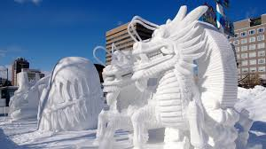
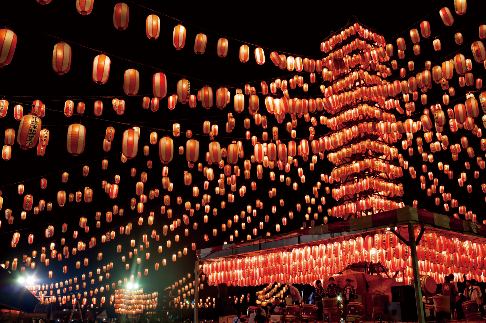
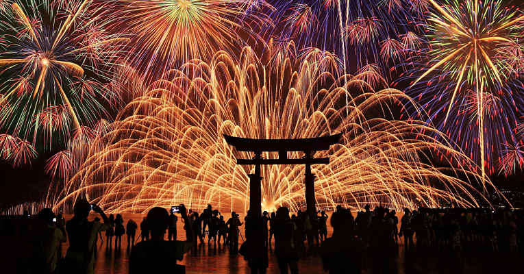
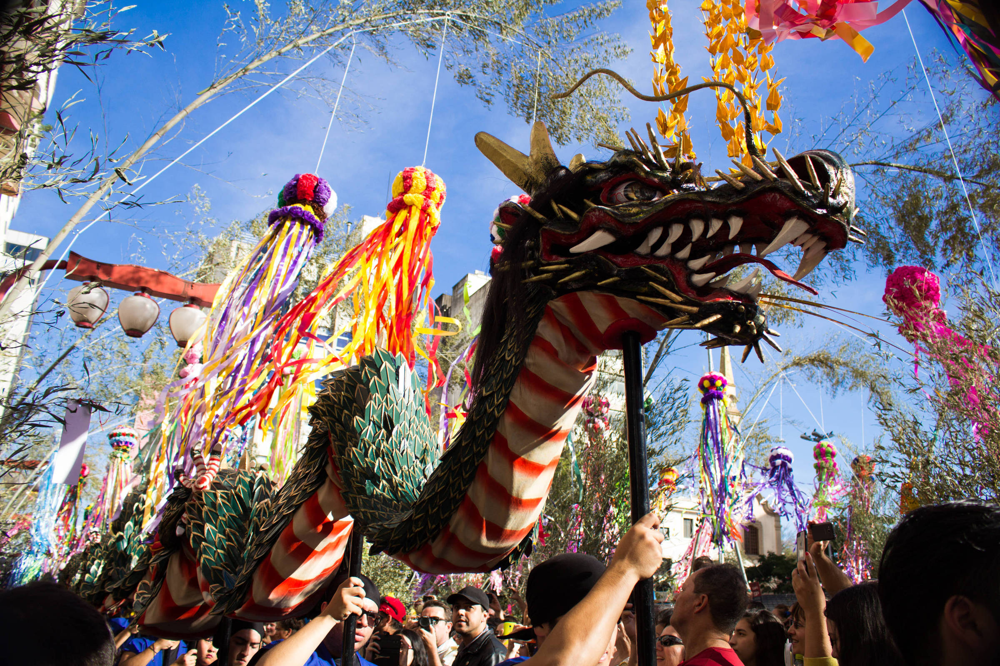

Yuki Matsuri
O Festival de Neve de Sapporo é um festival que acontece anualmente em Sapporo, Japão, durante sete dias de fevereiro. O Parque Odori, Susukino, e o Tsudome são os principais locais do festival.
Obon
Obon ou apenas Bon é a fusão da antiga crença japonesa em espíritos ancestrais e um costume budista japonês para honrar os espíritos dos ancestrais.
Hanami

Hanami é costume tradicional japonês de contemplar a beleza das flores, sendo que "flor" neste caso quase sempre significa sakura ou umê Do fim de março ao começo de maio, o sakura floresce por todo o Japão, e por volta de primeiro de fevereiro na ilha de Okinawa
Hanabi Taikai
O Hanabi Taikai é uma festividade japonesa realizada durante o verão, em várias províncias por todo o país, e outono onde são queimados muitos fogos de artifício. Em 1648 o xogunato proibiu o lançamento de fogos de artifício se não às margens do Rio Sumida.
Tanabata Matsuri
Tanabata Matsuri, ou simplesmente Tanabata, é uma comemoração japonesa, derivada da tradição chinesa Qi xi, que ocorre na sétima noite do sétimo mês do ano.